Código
datos <- read_excel("data/BD_SABI.xlsx", sheet = "Datos")
plot(datos$LIQUIDEZ_INMEDIATA, datos$ROA,
xlab = "LIQUIDEZ_INMEDIATA",
ylab = "ROA",
main = "ROA en función de la liquidez",
pch = 19)
Al finalizar este capítulo, el estudiante será capaz de:
Uno de los supuestos del modelo clásico de regresión lineal es que la perturbación aleatoria presenta una varianza constante para todas las observaciones. Este supuesto se denomina homocedasticidad y puede expresarse como:
\[ Var(u_i \mid X)=\sigma^2, \qquad i=1,\ldots,n. \]
Esto significa que, independientemente de los valores que tomen las variables explicativas, la variabilidad de la perturbación alrededor de la relación media que establece el modelo es la misma para todas las observaciones.
Por el contrario, existe heterocedasticidad cuando la varianza de la perturbación no es constante entre las observaciones. En este caso:
\[ Var(u_i \mid X)=\sigma_i^2, \qquad \sigma_i^2\neq\sigma^2. \]
Por tanto, la diferencia fundamental entre ambos casos es que, bajo homocedasticidad, los errores presentan una dispersión aproximadamente constante, mientras que bajo heterocedasticidad dicha dispersión cambia en función de las características de las observaciones.
La heterocedasticidad adquiere especial importancia cuando se trabaja con datos transversales, es decir, cuando se observan distintas unidades económicas en un mismo periodo o en un periodo determinado. En estos casos, las unidades analizadas suelen presentar diferencias importantes entre sí.
En nuestro ejemplo, las empresas de la muestra pueden diferir considerablemente en términos de tamaño, liquidez, endeudamiento, número de empleados y otras características. Por ello, resulta razonable plantearse si la variabilidad de los factores no observados que afectan al ROA es realmente la misma para todas ellas.
Esta es una de las razones por las que la heterocedasticidad es un problema frecuente en modelos aplicados a empresas, hogares, países u otras unidades económicas observadas en sección cruzada.
Para ilustrar este concepto, consideremos el modelo utilizado para explicar la rentabilidad económica de las empresas:
\[ ROA_i=\beta_0+\beta_1LIQ_i+\beta_2LEV_i+\beta_3EMP_i+u_i. \] En este modelo, el término de perturbación \(u_i\) recoge todos aquellos factores que afectan al ROA de la empresa \(i\) y que no están incluidos explícitamente en el modelo. Si se cumple el supuesto de homocedasticidad, estamos suponiendo que la variabilidad de estos factores no observados es similar para todas las empresas. Es decir, una empresa pequeña y una empresa grande presentarían, en términos generales, una dispersión similar de sus errores alrededor del valor de ROA explicado por el modelo.
Sin embargo, esta hipótesis puede resultar poco realista en datos empresariales. Las empresas pueden presentar diferencias importantes en su tamaño, estructura financiera, actividad o capacidad de gestión. Por ejemplo, es posible que los errores de predicción sean relativamente pequeños para empresas de características similares, mientras que presenten una mayor dispersión entre empresas de mayor tamaño o con estructuras financieras más heterogéneas. En este caso, la varianza de la perturbación podría aumentar con alguna de las variables explicativas o con el propio nivel de la variable dependiente. Gráficamente, esto podría dar lugar a una nube de residuos cuya dispersión aumenta o disminuye a medida que aumenta el valor de una variable.
Como primera aproximación al análisis de la posible presencia de heterocedasticidad, se representa el ROA en función de la LIQUIDEZ_INMEDIATA. En la representación se observa que, para valores de liquidez próximos a cero, los valores del ROA presentan una dispersión relativamente reducida, mientras que, a medida que aumenta la liquidez, la dispersión de los valores del ROA parece incrementarse. Este patrón podría ser indicativo de una varianza no constante de la variable dependiente a lo largo de los distintos niveles de liquidez y, por tanto, constituye una primera evidencia visual compatible con la presencia de heterocedasticidad. No obstante, esta apreciación debe contrastarse posteriormente mediante procedimientos gráficos y contrastes estadísticos específicos.
datos <- read_excel("data/BD_SABI.xlsx", sheet = "Datos")
plot(datos$LIQUIDEZ_INMEDIATA, datos$ROA,
xlab = "LIQUIDEZ_INMEDIATA",
ylab = "ROA",
main = "ROA en función de la liquidez",
pch = 19)
En notación matricial, el supuesto de homocedasticidad puede expresarse como:
\[ Var(\mathbf{u}\mid X)=\sigma^2 I_n, \]
donde \(I_n\) es la matriz identidad de orden \(n\). Esta expresión implica que todos los términos de perturbación tienen la misma varianza y que, además, no existe correlación entre las perturbaciones.
Cuando existe heterocedasticidad, la matriz de varianzas y covarianzas deja de tener la forma \(\sigma^2 I_n\) y puede expresarse, de forma general, como:
\[ \sigma^2(u)= \begin{pmatrix} \sigma_1^2 & 0 & \cdots & 0\\ 0 & \sigma_2^2 & \cdots & 0\\ \vdots & \vdots & \ddots & \vdots\\ 0 & 0 & \cdots & \sigma_n^2 \end{pmatrix} \]
En principio cabe suponer que las \(n\) varianzas son distintas entre sí. El total de parámetros a estimar sería mayor que el número de observaciones que tenemos (\(n+k>n\)), por lo que el modelo no puede ser estimado. La idea fundamental para el tratamiento de la heterocedasticidad es buscar un patrón de comportamiento que relacione entre sí las varianzas y posibilitar la estimación del modelo.
La heterocedasticidad puede aparecer por diferentes motivos relacionados con la naturaleza de las variables, la forma en la que se han construido los datos o la especificación del modelo. Entre las causas más habituales pueden destacarse las siguientes.
En el modelo \(ROA_i=\beta_0+\beta_1LIQ_i+ \beta_2LEV_i+ \beta_3EMP_i+u_i\), es posible que la variabilidad de los factores no observados que afectan al ROA no sea la misma para todas las empresasas empresas, por ejemplo que las de mayor tamaño pueden presentar una mayor diversidad en sus resultados y, en consecuencia, una mayor dispersión de los residuos.
Uso de una forma funcional incorrecta. La heterocedasticidad también puede ser consecuencia de especificar incorrectamente la relación entre la variable dependiente y las variables explicativas. En particular, puede ocurrir que se suponga una relación lineal cuando la relación verdadera presenta una forma no lineal.
Uso de datos agregados. La heterocedasticidad puede aparecer cuando las observaciones utilizadas en el análisis son valores agregados correspondientes a grupos de distinto tamaño. En estos casos, la precisión o variabilidad de las observaciones puede depender del número de elementos que componen cada grupo. Por ejemplo, si se analiza la rentabilidad media de empresas de diferentes provincias o sectores, los grupos pueden presentar tamaños muy distintos. Una media calculada a partir de un número reducido de empresas puede presentar una variabilidad diferente de otra obtenida a partir de un grupo mucho más numeroso.
Omisión de variables relevantes. Otra posible causa de heterocedasticidad es la omisión de variables relevantes que afectan a la variable dependiente. Cuando una variable relevante no se incluye explícitamente en el modelo, su efecto queda incorporado a la perturbación aleatoria. Si, además, esta variable omitida está relacionada con alguna de las variables incluidas en el modelo, la varianza de la perturbación puede dejar de ser constante.
Para ilustrarlo, supongamos que el verdadero modelo que explica el ROA es:
\[ ROA_i=\beta_0+\beta_1LIQ_i+ \beta_2LEV_i+ \beta_3EMP_i+u_i, \]
pero se estima un modelo en el que se omite el tamaño de la empresa:
\[ ROA_i=\alpha_0+\alpha_1LIQ_i+ \alpha_2LEV_i+v_i. \]
La perturbación del modelo estimado recogerá ahora tanto los factores no observados \(u_i\) como el efecto de la variable omitida:
\[ v_i=u_i+\beta_3EMP_i. \]
Suponiendo que \(E(u_i)=0\), \(Var(u_i)=\sigma^2\) y que se cumplen las condiciones habituales de exogeneidad, se obtiene:
\[ \begin{aligned} Var(v_i) &=E[v_i^2]\\ &=E[(u_i+\beta_3EMP_i)^2]\\ &=\sigma^2+\beta_3^2EMP_i^2. \end{aligned} \]
Por tanto, la varianza de la perturbación dependerá del tamaño de la empresa y, en consecuencia, no será constante entre las observaciones.
En definitiva, aunque las causas de la heterocedasticidad pueden ser diferentes, en muchos casos la varianza no constante está relacionada con alguna característica de las observaciones, ya sea una variable incluida en el modelo o una variable que ha sido omitida. Por ello, resulta útil representar de forma general la varianza de la perturbación como:
\[ \sigma_i^2=\sigma^2 f(X_i), \]
donde \(\sigma^2\) representa un componente común de la varianza y \(f(X_i)\) recoge el comportamiento de la varianza asociado a la variable o variables que generan la heterocedasticidad.
Esta expresión permite entender que la heterocedasticidad no implica necesariamente que toda la estructura de la varianza sea desconocida. Una parte puede representarse mediante un componente constante, mientras que otra depende de determinadas características de las observaciones. Esta idea será especialmente relevante posteriormente al estudiar los procedimientos de estimación y las alternativas que permiten realizar inferencia cuando no se cumple el supuesto de homocedasticidad.
Bajo los supuestos del modelo de regresión lineal, los estimadores de mínimos cuadrados ordinarios (MCO) son lineales, insesgados y eficientes, es decir, presentan la menor varianza dentro de la clase de estimadores lineales e insesgados. Sin embargo, cuando se incumple el supuesto de homocedasticidad, manteniéndose el resto de hipótesis del modelo, estas propiedades se ven afectadas.
En concreto, las principales consecuencias de la heterocedasticidad son las siguientes:
Los estimadores MCO siguen siendo insesgados y consistentes, pero dejan de ser eficientes. La presencia de heterocedasticidad no introduce, por sí misma, un sesgo en los estimadores de los coeficientes. Sin embargo, los estimadores MCO ya no presentan la mínima varianza posible dentro de la clase de estimadores lineales e insesgados. Por tanto, aunque las estimaciones puntuales de los coeficientes sigan siendo válidas, existen otros estimadores que pueden proporcionar estimaciones más precisas.
La estimación habitual de la matriz de varianzas-covarianzas de los estimadores MCO deja de ser válida. Las expresiones utilizadas bajo el supuesto de homocedasticidad para calcular los errores estándar se basan en que la varianza de la perturbación es constante. Cuando este supuesto no se cumple, los errores estándar calculados mediante el procedimiento convencional pueden estar incorrectamente estimados.
La inferencia estadística puede verse afectada. Si los errores estándar no están correctamente estimados, los estadísticos utilizados en los contrastes de hipótesis, como los estadísticos \(t\) y \(F\), pueden no seguir las distribuciones teóricas que se les atribuyen bajo los supuestos habituales. En consecuencia, las decisiones sobre la significación individual de los coeficientes o sobre la significación global del modelo pueden ser incorrectas.
Los intervalos de confianza y los intervalos de predicción pueden ser incorrectos. Al depender estos intervalos de la estimación de la varianza de los estimadores y de la perturbación, una estimación incorrecta de dicha varianza puede conducir a intervalos demasiado amplios o demasiado estrechos. Por tanto, la incertidumbre asociada a las estimaciones y predicciones puede estar mal cuantificada.
MCO no tiene en cuenta que algunas observaciones contienen más información que otras. Cuando existe heterocedasticidad, las observaciones no presentan la misma variabilidad. Una observación asociada a una perturbación con varianza elevada proporciona, en términos relativos, menos información sobre la relación entre las variables que una observación cuya perturbación presenta una varianza menor. Sin embargo, MCO trata todas las observaciones de la misma manera al minimizar la suma de cuadrados de los residuos. Esta es una de las razones por las que, cuando se conoce la estructura de la heterocedasticidad, pueden utilizarse métodos de estimación como los mínimos cuadrados generalizados (MCG), que permiten asignar un peso diferente a las observaciones en función de su varianza.
En resumen, la heterocedasticidad no hace que los estimadores MCO dejen de ser insesgados, pero sí afecta a su eficiencia y, especialmente, a la correcta estimación de sus errores estándar. Por ello, el principal problema práctico de la heterocedasticidad no se encuentra necesariamente en los valores estimados de los coeficientes, sino en la inferencia estadística que se realiza a partir de ellos.
En el contexto de Finanzas y Contabilidad, esto es especialmente importante. Por ejemplo, si se estima un modelo para explicar el ROA de un conjunto de empresas y la variabilidad del ROA es diferente entre empresas, los coeficientes MCO pueden seguir siendo insesgados, pero los errores estándar convencionales pueden ser incorrectos. Como consecuencia, podríamos concluir que una variable como la LIQUIDEZ_INMEDIATA o el ENDEUDAMIENTO es estadísticamente significativa cuando realmente no lo es, o no detectar una relación que sí resulta significativa. Por este motivo, una vez detectada la heterocedasticidad, será necesario utilizar procedimientos de inferencia o métodos de estimación que tengan en cuenta esta circunstancia.
La detección de la heterocedasticidad constituye una tarea especialmente importante, ya que la perturbación aleatoria del modelo no es directamente observable. Por ello, no podemos analizar de forma directa la varianza del término de error y debemos recurrir a los residuos estimados como aproximación.
Los procedimientos de detección pueden dividirse en dos grandes grupos:
En primer lugar, se estudiarán los métodos gráficos y, posteriormente, se presentarán los principales contrastes de heterocedasticidad.
Los métodos gráficos proporcionan una primera aproximación intuitiva a la existencia de heterocedasticidad. Su principal utilidad consiste en analizar si la dispersión de los residuos cambia sistemáticamente a medida que varía una determinada variable o a lo largo de las observaciones.
Es importante señalar que un gráfico, por sí solo, no permite concluir formalmente que existe heterocedasticidad. La interpretación puede depender de la escala utilizada y, en ocasiones, el patrón observado puede resultar difícil de distinguir visualmente. Por este motivo, las conclusiones obtenidas mediante gráficos deben complementarse posteriormente con un contraste analítico.
Dentro de los procedimientos gráficos pueden distinguirse los siguientes.
Una primera posibilidad consiste en representar los residuos estimados \(e_i\) o sus cuadrados \(e_i^2\) frente al número de observación \(i\).
El objetivo es comprobar si la dispersión de los residuos parece mantenerse aproximadamente constante a lo largo de la muestra. Si se observan zonas en las que los residuos presentan una dispersión claramente diferente de otras, puede existir evidencia gráfica de heterocedasticidad.
Por ejemplo, si al avanzar en las observaciones los residuos pasan de estar muy concentrados alrededor de cero a presentar una dispersión cada vez mayor, podría aparecer un patrón similar a un abanico, lo que constituiría una primera indicación de que la varianza de la perturbación no es constante.
plot(residuals(modelo_roa),
type = "p",
xlab = "Observación",
ylab = "Residuos",
main = "Residuos del modelo de ROA")
abline(h = 0, lty = 2)
Y, el grafico de los residuos al cuadrado:
plot(residuals(modelo_roa)^2,
type = "p",
xlab = "Observación",
ylab = "Residuos al cuadrado",
main = "Residuos al cuadrado del modelo de ROA")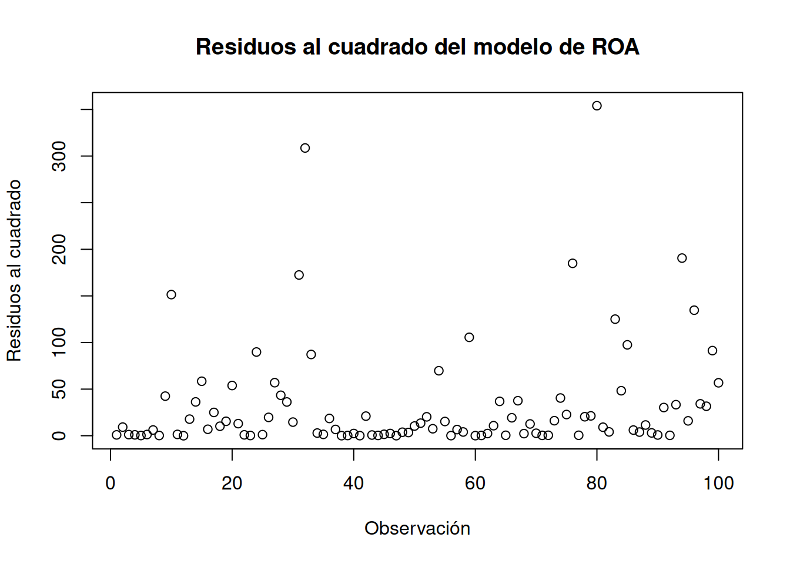
Una herramienta especialmente útil consiste en representar los residuos estimados, o sus cuadrados, frente a cada una de las variables explicativas del modelo. Esta representación permite analizar no solo si existe heterocedasticidad, sino también obtener una primera indicación sobre qué variable puede estar relacionada con el cambio en la varianza de los residuos.
Al analizar estos gráficos, no debemos centrarnos únicamente en si los residuos están próximos o alejados de cero. Lo que interesa fundamentalmente es comprobar si la amplitud de la nube de puntos cambia sistemáticamente. Así, podemos encontrar diferentes situaciones:
No obstante, los métodos gráficos presentan una limitación importante: la decisión sobre la existencia de heterocedasticidad puede ser subjetiva. Dos investigadores podrían interpretar de manera diferente un mismo gráfico. Por ello, la evidencia gráfica debe considerarse como un diagnóstico inicial y debe complementarse con contrastes estadísticos formales, que permitirán determinar si existen evidencias suficientes para rechazar la hipótesis de homocedasticidad.
Los métodos gráficos permiten obtener una primera aproximación a la posible existencia de heteroscedasticidad, pero su interpretación es necesariamente subjetiva. Por ello, es necesario complementar el análisis gráfico con contrastes estadísticos formales. En todos los contrastes que se presentan a continuación, la hipótesis nula parte de la existencia de homoscedasticidad:
\[ H_0:\operatorname{Var}(u_i)=\sigma^2 \]
frente a una hipótesis alternativa de heteroscedasticidad:
\[ H_1:\operatorname{Var}(u_i)\neq\sigma^2. \]
La diferencia entre los distintos contrastes radica fundamentalmente en la forma que se supone que puede adoptar la heteroscedasticidad. Algunos contrastes imponen una estructura concreta sobre la varianza, mientras que otros permiten una alternativa más general.
Una idea común a varios de estos procedimientos es utilizar los residuos del modelo original para analizar si su variabilidad puede explicarse mediante las variables explicativas. Si los residuos presentan una relación sistemática con determinadas variables, ello constituye evidencia a favor de la existencia de heteroscedasticidad.
En este tema se estudiarán cuatro procedimientos:
En todos los casos, la regla general de decisión será la misma: si el p-valor es inferior al nivel de significación elegido, se rechaza la hipótesis nula de homoscedasticidad y se concluye que existe evidencia de heteroscedasticidad.
Permite analizar situaciones en las que se sospecha que la varianza de las perturbaciones cambia de forma monótona con respecto a una variable explicativa determinada. Por tanto, resulta especialmente apropiado cuando los gráficos sugieren que la dispersión de los residuos aumenta o disminuye conforme aumenta una determinada variable.
Por ejemplo, en el modelo de rentabilidad empresarial:
\[ ROA_i=\beta_0+\beta_1LIQ_i+ \beta_2LEV_i+ \beta_3EMP_i+u_i, \]
podríamos sospechar que la variabilidad del ROA aumenta con la LIQUIDEZ_INMEDIATA. El test de Goldfeld-Quandt permite contrastar formalmente esta posibilidad.
El procedimiento consta de las siguientes etapas:
\[ F_{exp}=\frac{SCR_2}{SCR_1}. \]
Si la varianza es mayor en el segundo grupo, el estadístico tomará valores elevados. Bajo la hipótesis nula, el estadístico sigue una distribución \(F\) con los grados de libertad correspondientes a los dos grupos. Una cuestión importante en este contraste es la elección de las observaciones centrales que deben eliminarse. No existe una única elección, aunque tradicionalmente se ha propuesto eliminar aproximadamente un tercio de la muestra. En cualquier caso, los dos grupos deben tener el mismo número de observaciones y disponer de suficientes grados de libertad para estimar el modelo.
En R, el contraste puede realizarse mediante la función gqtest() del paquete lmtest.
Constituye una alternativa más general, ya que no requiere especificar previamente una variable concreta como causante de la heteroscedasticidad ni asumir una forma funcional determinada para la varianza. La idea consiste en analizar si los residuos al cuadrado pueden explicarse mediante las variables explicativas del modelo, sus cuadrados y sus productos cruzados. Para el modelo:
\[ ROA_i=\beta_0+\beta_1LIQ_i+ \beta_2LEV_i+u_i, \]
la regresión auxiliar incluiría, de forma simplificada, términos como:
\[ \hat e_i^2= \alpha_0+\alpha_1LIQ_i+ \alpha_2LEV_i+ \alpha_3LIQ_i^2+ \alpha_4LEV_i^2+ \alpha_5LIQ_iLEV_i+v_i. \]
El contraste parte de la hipótesis:
\[ H_0:\text{homoscedasticidad} \]
frente a:
\[ H_1:\text{heteroscedasticidad}. \]
El estadístico utilizado es:
\[ LM=nR^2_{aux}, \]
que, bajo la hipótesis nula, sigue asintóticamente una distribución \(\chi^2\) con los grados de libertad correspondientes al número de restricciones de la regresión auxiliar.
En R, el test de White puede realizarse mediante la función bptest() del paquete lmtest, utilizando la opción studentize = FALSE:
bptest(modelo_roa, studentize = FALSE)
Breusch-Pagan test
data: modelo_roa
BP = 3.735, df = 2, p-value = 0.1545El resultado proporciona el estadístico del contraste y su p-valor.
Por tanto, la interpretación es directa:
p-value < α, se rechaza \(H_0\) y existe evidencia de heteroscedasticidad.p-value ≥ α, no se rechaza \(H_0\) y no se dispone de evidencia suficiente para afirmar que existe heteroscedasticidad.La principal ventaja del test de White es su flexibilidad, ya que no es necesario establecer previamente cuál es la variable que provoca el cambio en la varianza ni cuál es la forma funcional concreta de dicha relación. Sin embargo, esta misma generalidad constituye también una limitación: si se rechaza la hipótesis nula, el contraste indica que existe evidencia de heteroscedasticidad, pero no identifica por sí mismo cuál es su causa ni proporciona necesariamente una forma concreta para modelar la varianza.
Parte de una hipótesis alternativa más específica que la de White. En este caso se supone que la varianza de las perturbaciones puede explicarse mediante una relación lineal con un conjunto de variables. En términos generales, se supone que:
\[ \sigma_i^2= \alpha_1+\alpha_2Z_{2i}+\cdots+\alpha_kZ_{ki}. \]
Las variables \(Z\) pueden coincidir con las variables explicativas del modelo original o con un subconjunto de ellas.
El procedimiento se basa en los siguientes pasos:
En R, el contraste puede realizarse directamente mediante:
bptest(modelo_roa)
studentized Breusch-Pagan test
data: modelo_roa
BP = 2.2693, df = 2, p-value = 0.3215En este caso, las variables explicativas del modelo modelo_roa se utilizan para analizar si existe una relación sistemática entre ellas y la varianza de las perturbaciones.
Si queremos especificar explícitamente las variables que consideramos relacionadas con la heteroscedasticidad, podemos utilizar:
bptest(modelo_roa,
varformula = ~ datos$LIQUIDEZ_INMEDIATA + datos$ENDEUDAMIENTO + datos$EMPLEADOS)
studentized Breusch-Pagan test
data: modelo_roa
BP = 3.0002, df = 3, p-value = 0.3916Esto resulta especialmente útil en el ejemplo del ROA porque permite plantear directamente la hipótesis de que la variabilidad de la rentabilidad empresarial puede depender de variables como la liquidez, el endeudamiento o el tamaño de la empresa, aproximado mediante el número de empleados.
La interpretación se realiza nuevamente mediante el p-valor. Si este es inferior al nivel de significación elegido, se rechaza la hipótesis nula de homoscedasticidad.
Una diferencia importante respecto al test de White es, por tanto, que Breusch-Pagan plantea una estructura más concreta para la varianza, mientras que White permite una especificación mucho más general mediante cuadrados y productos cruzados de las variables explicativas.
El método de Glejser presenta un planteamiento diferente. Su objetivo no es únicamente detectar la existencia de heteroscedasticidad, sino también obtener información sobre la posible forma funcional de la varianza. El procedimiento parte de los residuos del modelo original y analiza si su valor absoluto puede explicarse mediante una variable que se sospecha que está relacionada con la heteroscedasticidad.
La regresión auxiliar adopta la forma:
\[ |\hat e_i|=\alpha+\beta X_i^h+v_i, \]
donde \(X_i\) es la variable que se considera potencialmente responsable de la heteroscedasticidad y \(h\) puede adoptar diferentes valores. Entre las especificaciones más habituales se encuentran:
\[ h\in{-2,-1,-1/2,1/2,1,2}. \]
En cada una de estas regresiones se analiza la significación individual del coeficiente asociado a la variable transformada.
Si el coeficiente no resulta significativo, no se encuentra evidencia de que esa transformación de la variable explique sistemáticamente la magnitud de los residuos.
Por el contrario, si el coeficiente resulta significativo, existe evidencia de que la magnitud de los residuos depende de dicha variable y, por tanto, de que puede existir heteroscedasticidad.
Si varias especificaciones resultan significativas, puede compararse su capacidad explicativa, por ejemplo mediante el \(R^2\), para determinar cuál proporciona un mejor ajuste de la magnitud de los residuos.
Es importante señalar que Glejser no constituye un contraste de hipótesis de heteroscedasticidad en el mismo sentido que Breusch-Pagan o White. Su conclusión se basa en contrastes de significación de los parámetros de las regresiones auxiliares. Su interés reside en que, además de proporcionar evidencia sobre la existencia de heteroscedasticidad, puede aportar información sobre la forma que podría adoptar la varianza.
Como se ha señalado anteriormente, la presencia de heteroscedasticidad no impide que los estimadores de mínimos cuadrados ordinarios (MCO) sean lineales, insesgados y consistentes, pero sí hace que dejen de ser eficientes. Además, las expresiones habituales utilizadas para estimar las varianzas de los estimadores dejan de ser válidas.
La razón es que los estimadores MCO no incorporan la información relativa a las diferentes varianzas de las perturbaciones. Por tanto, si conocemos, o podemos estimar, cómo varía la varianza del término de perturbación entre las distintas observaciones, podemos utilizar esta información para transformar el modelo y obtener un modelo con perturbaciones homoscedásticas.
Consideremos el modelo lineal general:
\[ y=X\beta+u \]
donde:
\[ E(u)=0 \]
y la matriz de varianzas y covarianzas de las perturbaciones es:
\[ Var(u)=E(uu^t)= \begin{pmatrix} \sigma_1^2 & 0 & \cdots & 0\\ 0 & \sigma_2^2 & \cdots & 0\\ \vdots & \vdots & \ddots & \vdots\\ 0 & 0 & \cdots & \sigma_n^2 \end{pmatrix}. \]
Esta expresión indica que las perturbaciones están incorrelacionadas, pero presentan varianzas diferentes entre observaciones.
Por comodidad, podemos expresar cada una de estas varianzas como:
\[ \sigma_i^2=\sigma^2w_i, \]
de manera que:
\[ Var(u)=\sigma^2\Omega, \]
donde:
\[ \Omega= \begin{pmatrix} w_1 & 0 & \cdots & 0\\ 0 & w_2 & \cdots & 0\\ \vdots & \vdots & \ddots & \vdots\\ 0 & 0 & \cdots & w_n \end{pmatrix}. \]
Se verifica el Teorema de Aitken de manera que \(\Omega=PP'\). El objetivo es encontrar una transformación que permita convertir esta matriz de varianzas y covarianzas en una matriz proporcional a la identidad.
Para ello, definimos la matriz diagonal:
\[ P^{-1}= \begin{pmatrix} \dfrac{1}{\sqrt{w_1}} & 0 & \cdots & 0\\ 0 & \dfrac{1}{\sqrt{w_2}} & \cdots & 0\\ \vdots & \vdots & \ddots & \vdots\\ 0 & 0 & \cdots & \dfrac{1}{\sqrt{w_n}} \end{pmatrix}. \]
Al multiplicar el modelo original por esta matriz obtenemos:
\[ P^{-1}y=P^{-1}X\beta+P^{-1}u. \]
Definiendo:
\[ y^*=P^{-1}y,\qquad X^*=P^{-1}X,\qquad u^*=P^{-1}u, \]
el modelo transformado queda:
\[ y^*=X^*\beta+u^*. \]
En términos de cada observación:
\[ Y_i^*=\frac{Y_i}{\sqrt{w_i}}, \qquad X_{ji}^*=\frac{X_{ji}}{\sqrt{w_i}}, \qquad u_i^*=\frac{u_i}{\sqrt{w_i}}. \]
La transformación consigue que:
\[ E(u_i^*)=0 \]
y:
\[ Var(u_i^*)=\frac{1}{w_i}Var(u_i)=\frac{1}{w_i}\sigma^2w_i=\sigma^2. \]
Por tanto, las perturbaciones del modelo transformado presentan una varianza constante. Además, como las perturbaciones originales estaban incorrelacionadas, las perturbaciones transformadas también lo están.
En consecuencia, el modelo transformado presenta perturbaciones esféricas y podemos aplicar MCO sobre las variables transformadas.
La transformación anterior permite interpretar el procedimiento como un método de mínimos cuadrados ponderados (MCP).
La idea es sencilla: las observaciones no tienen todas la misma fiabilidad cuando la varianza de la perturbación es diferente entre ellas. Por ello, se asigna a cada observación un peso inversamente relacionado con la varianza de su perturbación.
En particular, si:
\[ Var(u_i)=\sigma^2w_i, \]
el peso utilizado en la transformación es:
\[ \frac{1}{w_i}. \]
Así, las observaciones asociadas a una mayor varianza reciben un menor peso, mientras que aquellas con una menor varianza reciben un mayor peso.
Esto resulta intuitivamente razonable: una observación cuyo término de perturbación presenta una elevada variabilidad contiene más incertidumbre y, por tanto, debe tener una menor influencia en la estimación de los parámetros.
En la práctica, normalmente no conocemos los valores \(w_i\) y, por tanto, tampoco conocemos exactamente la matriz de varianzas y covarianzas de las perturbaciones.
Por este motivo, es necesario estimar previamente la estructura de la heteroscedasticidad.
Los métodos gráficos y, especialmente, los contrastes analizados anteriormente pueden proporcionar información sobre la variable que está relacionada con la varianza de las perturbaciones. El procedimiento general consiste entonces en:
Este procedimiento recibe el nombre de mínimos cuadrados generalizados factibles (MCGF), ya que la matriz de varianzas y covarianzas desconocida se sustituye por una estimación de la misma.
Una alternativa a especificar el esquema concreto de la heteroscedasticidad consiste en mantener el modelo original estimado por MCO y utilizar errores estándar robustos.
Estimamos primero el modelo original:
modelo_roa <- lm(
ROA ~ LIQUIDEZ_INMEDIATA + ENDEUDAMIENTO + EMPLEADOS,
data = datos
)A continuación, podemos obtener errores estándar robustos mediante las funciones vcovHC() y coeftest():
coeftest(
modelo_roa,
vcov = vcovHC(modelo_roa, type = "HC0")
)
t test of coefficients:
Estimate Std. Error t value Pr(>|t|)
(Intercept) 18.4459978 3.3734817 5.4679 3.603e-07 ***
LIQUIDEZ_INMEDIATA -0.2677055 1.8651095 -0.1435 0.8861698
ENDEUDAMIENTO -0.1562574 0.0417377 -3.7438 0.0003089 ***
EMPLEADOS -0.0067096 0.0035829 -1.8727 0.0641580 .
---
Signif. codes: 0 '***' 0.001 '**' 0.01 '*' 0.05 '.' 0.1 ' ' 1En este caso, los coeficientes estimados no cambian respecto a MCO. Lo que cambia es la estimación de su matriz de varianzas-covarianzas y, por tanto, los errores estándar, los estadísticos de contraste y los p-valores.
La diferencia entre ambos procedimientos es importante:
Por tanto, si se dispone de información suficiente para justificar el esquema de la varianza, los mínimos cuadrados ponderados pueden aprovechar esa información. Si no se conoce adecuadamente la estructura de la heteroscedasticidad, los errores estándar robustos proporcionan una alternativa más flexible para realizar inferencia válida.
En esta práctica se contrasta el supuesto de homocedasticidad de las perturbaciones del modelo lineal clásico, \(\operatorname{Var}(u_t \mid X) = \sigma^2\) para todo \(t\). Se sigue el esquema habitual de diagnóstico:
Detección gráfica de heterocedasticidad.
Contrastes formales: Goldfeld-Quandt, Breusch-Pagan y Glejser.
Si se detecta el problema: corrección tomando logaritmos y con errores estándar robustos (HC1).
En primer lugar, instalamos los paquetes que necesitamos:
paquetes <- c("lmtest", # Contrastes de heterocedasticidad (gqtest, bptest)
"ggplot2", # Gráficos
"estimatr") # Errores estándar robustos (lm_robust)
nuevos <- paquetes[!paquetes %in% rownames(installed.packages())]
if (length(nuevos) > 0) install.packages(nuevos)Installing package into '/home/runner/work/_temp/Library'
(as 'lib' is unspecified)also installing the dependency 'RcppEigen'library(lmtest)
library(ggplot2)
library(estimatr)Cargamos los datos. Se trata de una serie temporal mensual con datos simulados. Describe el salario medio y sus posibles determinantes:
| Variable | Tipo | Descripción |
|---|---|---|
date |
Texto (AAAA-MM) |
Mes de la observación. Identifica la observación; no entra en el modelo. |
salario |
Numérica continua | Variable dependiente (\(y\)). Salario medio mensual (en unidades monetarias). |
experiencia |
Numérica continua | Experiencia media de los trabajadores. Se espera efecto positivo sobre el salario. |
horas_trabajadas |
Numérica continua | Horas trabajadas en el periodo. Se espera efecto positivo. |
educacion |
Numérica continua | Nivel de formación medio (escala continua, aprox. 1,5 a 8). Se espera efecto positivo. |
recesion |
Binaria (0/1) | Dummy que vale 1 en los meses de recesión (marzo a junio de 2020) y 0 en el resto. |
crisis_sectorial |
Binaria (0/1) | Dummy de crisis sectorial. Vale 0 en todos los meses, es decir, es constante y no aporta información; por eso no se incluye en el modelo. |
fecha |
Date |
Versión de date en formato fecha, creada para poder graficar la serie. |
datos <- read.csv(text = "
date,salario,experiencia,horas_trabajadas,educacion,recesion,crisis_sectorial
2019-01,14569.13,58.00,2006.60,5.46,0,0
2019-02,14571.53,64.88,2007.59,4.25,0,0
2019-03,13870.92,28.00,1988.84,6.45,0,0
2019-04,14321.28,46.69,2001.91,6.12,0,0
2019-05,14488.73,57.63,1999.31,6.78,0,0
2019-06,14571.73,60.85,2007.45,2.23,0,0
2019-07,14068.76,54.21,1995.39,1.89,0,0
2019-08,14703.11,62.22,2007.20,5.45,0,0
2019-09,14364.63,50.75,2000.16,3.88,0,0
2019-10,14323.33,53.24,1999.14,5.44,0,0
2019-11,14239.84,49.70,1995.49,5.28,0,0
2019-12,14021.30,37.80,1992.19,5.09,0,0
2020-01,14153.04,39.96,1992.26,6.27,0,0
2020-02,14366.17,51.61,2000.30,5.69,0,0
2020-03,14215.82,42.49,1992.06,5.56,1,0
2020-04,14620.05,60.08,2006.39,3.37,1,0
2020-05,14739.26,60.28,2001.44,7.56,1,0
2020-06,14551.69,65.09,2006.43,5.00,1,0
2020-07,14266.52,47.75,1996.61,6.57,0,0
2020-08,14549.63,61.15,2009.29,5.32,0,0
2020-09,14013.41,39.39,1988.48,6.83,0,0
2020-10,14049.51,40.25,1992.41,5.05,0,0
2020-11,14203.11,48.77,2002.21,5.15,0,0
2020-12,14321.79,50.67,1997.36,5.02,0,0
2021-01,13729.50,32.81,1985.68,3.67,0,0
2021-02,13756.51,31.56,1989.86,3.88,0,0
2021-03,14148.11,51.37,1998.93,4.56,0,0
2021-04,14078.94,39.81,1996.17,4.61,0,0
2021-05,14508.55,59.48,2001.37,3.23,0,0
2021-06,14569.97,51.75,2000.67,8.00,0,0
2021-07,14315.78,50.92,2001.74,3.23,0,0
2021-08,14307.20,49.98,2002.40,4.31,0,0
2021-09,14626.97,56.51,1999.14,8.00,0,0
2021-10,14027.75,46.55,2001.76,3.74,0,0
2021-11,14520.66,58.31,2000.79,6.03,0,0
2021-12,14089.13,43.00,1990.41,5.86,0,0
2022-01,14101.24,45.86,1993.77,4.47,0,0
2022-02,13877.94,41.54,1994.94,2.51,0,0
2022-03,14316.77,53.68,2000.09,2.32,0,0
2022-04,14227.52,48.34,1999.60,4.79,0,0
2022-05,13985.09,39.81,1995.08,5.47,0,0
2022-06,14548.62,67.02,2009.48,1.50,0,0
2022-07,14125.99,44.54,1995.29,5.04,0,0
2022-08,14082.59,46.90,2003.20,3.75,0,0
2022-09,14298.87,51.74,1992.97,6.23,0,0
2022-10,14469.46,64.60,2001.58,5.08,0,0
2022-11,13944.54,46.59,1995.60,3.52,0,0
2022-12,14159.60,54.68,1997.66,4.12,0,0
2023-01,14218.51,48.94,1990.34,4.88,0,0
2023-02,13988.07,34.09,1987.81,6.96,0,0
2023-03,14540.13,55.52,1999.74,8.00,0,0
2023-04,14288.31,57.70,1995.50,5.39,0,0
2023-05,14129.07,45.72,1999.49,5.01,0,0
2023-06,14272.85,47.85,2002.08,5.94,0,0
2023-07,13917.66,33.74,1994.11,4.87,0,0
2023-08,13887.06,33.53,1988.42,5.94,0,0
2023-09,14087.48,44.28,1996.43,5.55,0,0
2023-10,14417.79,53.95,1997.68,4.94,0,0
2023-11,14043.38,43.54,1996.21,3.67,0,0
2023-12,14236.98,50.77,1997.37,5.20,0,0
", stringsAsFactors = FALSE)
# Variable de fecha en formato Date (el mes se codifica como día 1)
datos$fecha <- as.Date(paste0(datos$date, "-01"))
head(datos) date salario experiencia horas_trabajadas educacion recesion
1 2019-01 14569.13 58.00 2006.60 5.46 0
2 2019-02 14571.53 64.88 2007.59 4.25 0
3 2019-03 13870.92 28.00 1988.84 6.45 0
4 2019-04 14321.28 46.69 2001.91 6.12 0
5 2019-05 14488.73 57.63 1999.31 6.78 0
6 2019-06 14571.73 60.85 2007.45 2.23 0
crisis_sectorial fecha
1 0 2019-01-01
2 0 2019-02-01
3 0 2019-03-01
4 0 2019-04-01
5 0 2019-05-01
6 0 2019-06-01Se estima el siguiente modelo: \[ \text{salario}_t = \beta_0 + \beta_1\,\text{experiencia}_t + \beta_2\,\text{horas\_trabajadas}_t + \beta_3\,\text{educacion}_t + \beta_4\,\text{recesion}_t + u_t \]
modelo <- lm(salario ~ experiencia + horas_trabajadas + educacion + recesion,
data = datos)
summary(modelo)
Call:
lm(formula = salario ~ experiencia + horas_trabajadas + educacion +
recesion, data = datos)
Residuals:
Min 1Q Median 3Q Max
-165.579 -45.677 1.189 51.710 155.705
Coefficients:
Estimate Std. Error t value Pr(>|t|)
(Intercept) -10154.064 6244.394 -1.626 0.109643
experiencia 18.454 1.940 9.514 3.23e-13 ***
horas_trabajadas 11.619 3.160 3.677 0.000538 ***
educacion 54.664 7.152 7.643 3.33e-10 ***
recesion 83.429 41.152 2.027 0.047487 *
---
Signif. codes: 0 '***' 0.001 '**' 0.01 '*' 0.05 '.' 0.1 ' ' 1
Residual standard error: 77.08 on 55 degrees of freedom
Multiple R-squared: 0.9082, Adjusted R-squared: 0.9016
F-statistic: 136.1 on 4 and 55 DF, p-value: < 2.2e-16experiencia se asocia, ceteris paribus, con unos 18,5 de salario adicional (\(p < 0{,}001\)).educacion, con unos 54,7 (\(p < 0{,}001\)).recesion presentan un salario unos 83 superior (\(p \approx 0{,}047\)), signo contrario al que cabría esperar a priori y apenas significativo al 5 %. Con solo 4 meses de recesión conviene ser prudente (y recordar que los datos son simulados).El modelo explica el 91 % de la variabilidad del salario (\(R^2 \approx 0{,}908\), error estándar residual de unos 77). Pero estos p-valores solo son fiables si las perturbaciones son homocedásticas: si no lo son, los errores estándar clásicos están mal calculados y los contrastes \(t\) y \(F\) dejan de ser válidos. Eso es lo que se comprueba a continuación.
Para detectar graficamente la heterocedasticidad, se guardan los residuos y los valores ajustados del modelo:
datos$residuos <- resid(modelo)
datos$ajustados <- fitted(modelo)Se representan los residuos frente al número de observación:
ggplot(data.frame(observaciones = seq_along(datos$residuos),
residuos = datos$residuos),
aes(x = observaciones, y = residuos)) +
geom_point() +
geom_hline(yintercept = 0, linetype = "dashed", color = "red") +
xlab("Número de observación") +
ylab("Residuos") +
ggtitle("Residuos vs Número de Observaciones") +
theme_minimal()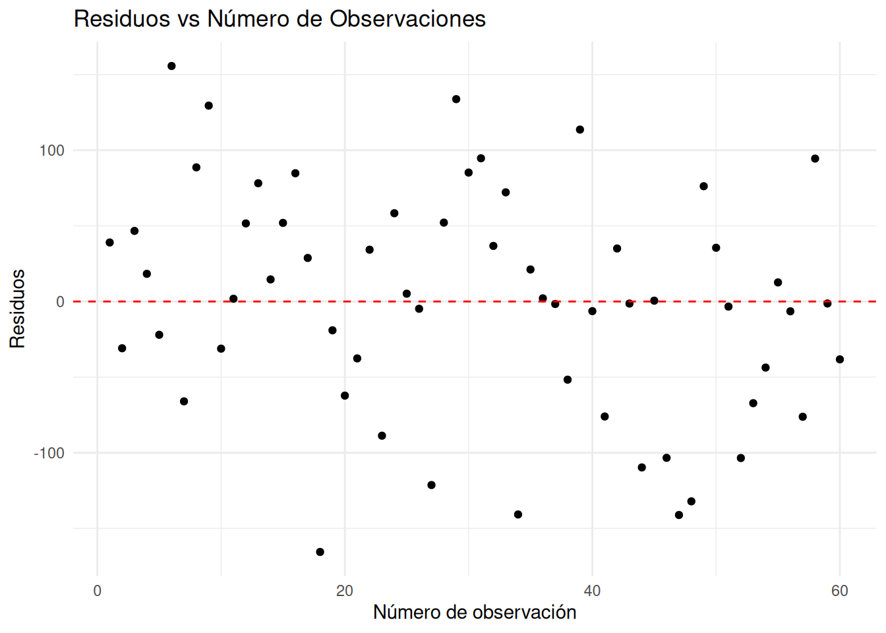
y los residuos frente a una variable explicativa:
ggplot(datos, aes(x = experiencia, y = residuos)) +
geom_point() +
geom_hline(yintercept = 0, linetype = "dashed", color = "red") +
xlab("Experiencia") +
ylab("Residuos") +
ggtitle("Residuos vs Variable Explicativa (experiencia)") +
theme_minimal()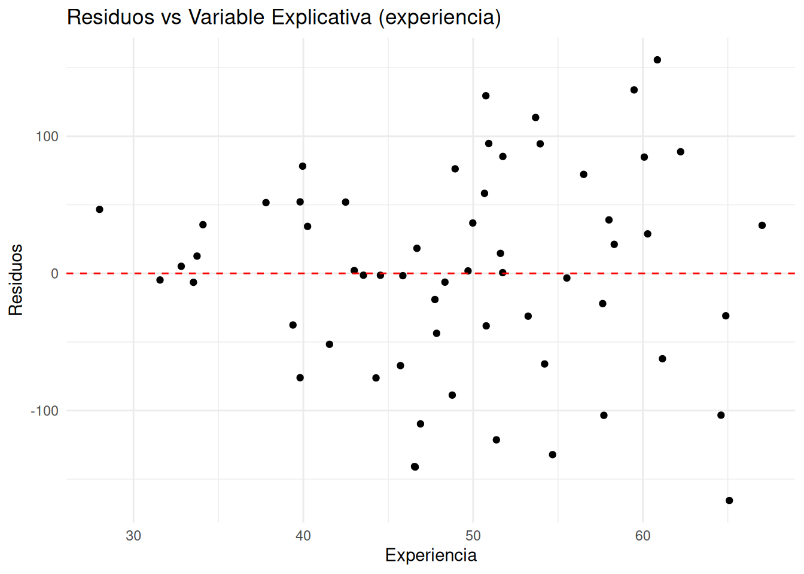
ggplot(datos, aes(x = ajustados, y = residuos)) +
geom_point() +
geom_hline(yintercept = 0, linetype = "dashed", color = "red") +
xlab("Valores ajustados") +
ylab("Residuos") +
ggtitle("Residuos vs Valores Ajustados") +
theme_minimal()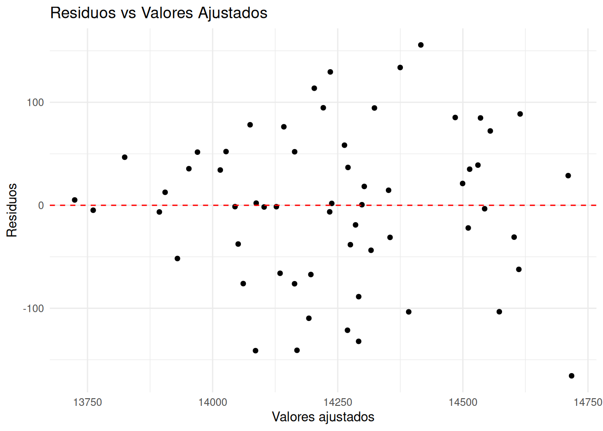
Para realizar el contraste de Goldfeld-Quandt, se ordena la muestra según experiencia (la variable que se sospecha que gobierna la varianza), se omite una fracción central del 33 % y se comparan las varianzas residuales de los dos extremos.
greater, por defecto).gq <- gqtest(modelo, order.by = ~ experiencia, fraction = 0.33, data = datos)
gq
Goldfeld-Quandt test
data: modelo
GQ = 3.9224, df1 = 16, df2 = 15, p-value = 0.005672
alternative hypothesis: variance increases from segment 1 to 2Comentario. El estadístico es \(GQ \approx 3{,}92\) con un p-valor de unos 0,006, menor que 0,01. Se rechaza \(H_0\) incluso al 1 %: la varianza de las perturbaciones es significativamente mayor en el extremo de mayor experiencia. De hecho, la desviación típica residual del submodelo de experiencia alta (≈ 88) es aproximadamente el doble que la del de experiencia baja (≈ 45), y su cociente al cuadrado es, precisamente, el estadístico \(GQ\).
Para realizar el contraste de Breusch-Pagan, se regresan los residuos estandarizados al cuadrado sobre todas las variables explicativas del modelo y se contrasta su significatividad conjunta:
bp <- bptest(modelo)
bp
studentized Breusch-Pagan test
data: modelo
BP = 15.358, df = 4, p-value = 0.004014Comentario. El estadístico es \(BP \approx 15{,}36\), con 4 grados de libertad (uno por regresor), y un p-valor de unos 0,004. Se rechaza la homocedasticidad al 1 %: los regresores explican de forma conjunta una parte significativa de la magnitud de los residuos al cuadrado. A diferencia de Goldfeld-Quandt, este contraste no exige elegir una variable concreta ni descartar observaciones, aunque tampoco indica cuál de los regresores es el responsable (para eso sirve el contraste de Glejser).
Para realizar el contraste de Glesjer, se regresa el valor absoluto de los residuos sobre la variable que se sospecha relacionada con la varianza (aquí experiencia) con distintas formas funcionales (“esquemas”). Si el coeficiente de la pendiente es significativo, hay evidencia de heterocedasticidad.
En ambos, \(H_0: \delta_1 = 0\) (homocedasticidad).
datos$abs_res <- abs(datos$residuos)
datos$experiencia2 <- datos$experiencia^2
# Esquema 1: lineal
modelo_h1 <- lm(abs_res ~ experiencia, data = datos)
summary(modelo_h1)
Call:
lm(formula = abs_res ~ experiencia, data = datos)
Residuals:
Min 1Q Median 3Q Max
-66.169 -35.778 -0.149 28.326 87.543
Coefficients:
Estimate Std. Error t value Pr(>|t|)
(Intercept) -29.4483 30.3723 -0.970 0.33628
experiencia 1.7828 0.6057 2.943 0.00467 **
---
Signif. codes: 0 '***' 0.001 '**' 0.01 '*' 0.05 '.' 0.1 ' ' 1
Residual standard error: 42.73 on 58 degrees of freedom
Multiple R-squared: 0.1299, Adjusted R-squared: 0.1149
F-statistic: 8.662 on 1 and 58 DF, p-value: 0.004666# Esquema 2: cuadrático
modelo_h2 <- lm(abs_res ~ experiencia2, data = datos)
summary(modelo_h2)
Call:
lm(formula = abs_res ~ experiencia2, data = datos)
Residuals:
Min 1Q Median 3Q Max
-65.299 -34.831 0.642 29.275 88.867
Coefficients:
Estimate Std. Error t value Pr(>|t|)
(Intercept) 13.307224 16.615352 0.801 0.42646
experiencia2 0.017957 0.006232 2.882 0.00554 **
---
Signif. codes: 0 '***' 0.001 '**' 0.01 '*' 0.05 '.' 0.1 ' ' 1
Residual standard error: 42.85 on 58 degrees of freedom
Multiple R-squared: 0.1252, Adjusted R-squared: 0.1102
F-statistic: 8.304 on 1 and 58 DF, p-value: 0.005539Comentario. En el esquema lineal, el coeficiente de experiencia es positivo (≈ 1,78) y significativo (\(p \approx 0{,}005\)): cada unidad adicional de experiencia aumenta en promedio en casi 2 unidades el tamaño absoluto del residuo. En el esquema cuadrático, el coeficiente también es positivo y significativo (\(p \approx 0{,}006\)). En ambos se rechaza \(H_0: \delta_1 = 0\). El \(R^2\) de las regresiones auxiliares es modesto (≈ 13 % y 12,5 %), lo cual es normal porque el valor absoluto de un residuo es una variable muy ruidosa. Lo relevante es que el signo es positivo: la varianza crece con la experiencia. Los dos esquemas dan resultados muy parecidos y no permiten distinguir claramente entre una relación lineal o cuadrática.
Como posible solucións, se toman logaritmos de la variable dependiente, lo que suele estabilizar la varianza cuando esta crece con el nivel de la variable. Ahora los coeficientes se leen como semielasticidades (variación porcentual aproximada de salario ante un cambio de una unidad en el regresor).
modelolog <- lm(log(salario) ~ experiencia + horas_trabajadas + educacion + recesion,
data = datos)
summary(modelolog)
Call:
lm(formula = log(salario) ~ experiencia + horas_trabajadas +
educacion + recesion, data = datos)
Residuals:
Min 1Q Median 3Q Max
-0.011575 -0.003138 0.000077 0.003681 0.010794
Coefficients:
Estimate Std. Error t value Pr(>|t|)
(Intercept) 7.8580178 0.4367948 17.990 < 2e-16 ***
experiencia 0.0012992 0.0001357 9.575 2.59e-13 ***
horas_trabajadas 0.0008122 0.0002211 3.674 0.000542 ***
educacion 0.0038363 0.0005003 7.668 3.03e-10 ***
recesion 0.0056866 0.0028786 1.975 0.053242 .
---
Signif. codes: 0 '***' 0.001 '**' 0.01 '*' 0.05 '.' 0.1 ' ' 1
Residual standard error: 0.005391 on 55 degrees of freedom
Multiple R-squared: 0.9088, Adjusted R-squared: 0.9022
F-statistic: 137.1 on 4 and 55 DF, p-value: < 2.2e-16Se repite el contraste de Breusch-Pagan sobre el modelo en logaritmos:
bptest(modelolog)
studentized Breusch-Pagan test
data: modelolog
BP = 15.455, df = 4, p-value = 0.003845Comentario. El estadístico es \(BP \approx 15{,}45\) con un p-valor de unos 0,004: se sigue rechazando la homocedasticidad. La transformación logarítmica no ha corregido el problema. La razón es que aquí la varianza no depende del nivel del salario (que apenas varía, entre 13.730 y 14.739), sino de la experiencia. Tomar logaritmos de una variable que se mueve en un rango tan estrecho es prácticamente una transformación lineal y no cambia la forma de la dispersión. Este es un resultado importante: los logaritmos no son una solución universal, y siempre hay que volver a contrastar tras transformar. (Los coeficientes del modelo en logaritmos se interpretarían así: una unidad más de experiencia eleva el salario en torno a un 0,13 %, un punto más de educacion en torno a un 0,38 % y la recesión se asocia a un salario un 0,57 % superior, con \(p \approx 0{,}053\).)
Dado que la transformación no ha funcionado, se recurre a errores estándar robustos tipo HC1 (la corrección de White con ajuste por grados de libertad, equivalente a la opción robust de Stata). Los coeficientes no cambian respecto a MCO; solo cambian los errores estándar y, por tanto, los estadísticos \(t\) y p-valores.
modelo_robusto <- lm_robust(salario ~ experiencia + horas_trabajadas + educacion + recesion,
data = datos, se_type = "HC1")
summary(modelo_robusto)
Call:
lm_robust(formula = salario ~ experiencia + horas_trabajadas +
educacion + recesion, data = datos, se_type = "HC1")
Standard error type: HC1
Coefficients:
Estimate Std. Error t value Pr(>|t|) CI Lower CI Upper DF
(Intercept) -10154.06 6351.399 -1.599 1.156e-01 -22882.553 2574.42 55
experiencia 18.45 2.004 9.208 9.841e-13 14.438 22.47 55
horas_trabajadas 11.62 3.220 3.608 6.659e-04 5.166 18.07 55
educacion 54.66 7.172 7.622 3.608e-10 40.292 69.04 55
recesion 83.43 51.446 1.622 1.106e-01 -19.671 186.53 55
Multiple R-squared: 0.9082 , Adjusted R-squared: 0.9016
F-statistic: 207 on 4 and 55 DF, p-value: < 2.2e-16Podemos comparar los errores estándar y p-valores de MCO clásicos y robustos:
comparacion <- data.frame(
Coeficiente = round(coef(modelo), 4),
EE_MCO = round(summary(modelo)$coefficients[, "Std. Error"], 4),
EE_HC1 = round(modelo_robusto$std.error, 4),
p_MCO = round(summary(modelo)$coefficients[, "Pr(>|t|)"], 4),
p_HC1 = round(modelo_robusto$p.value, 4)
)
comparacion$Cociente_EE <- round(comparacion$EE_HC1 / comparacion$EE_MCO, 2)
comparacion Coeficiente EE_MCO EE_HC1 p_MCO p_HC1 Cociente_EE
(Intercept) -10154.0643 6244.3940 6351.3991 0.1096 0.1156 1.02
experiencia 18.4544 1.9398 2.0042 0.0000 0.0000 1.03
horas_trabajadas 11.6193 3.1602 3.2201 0.0005 0.0007 1.02
educacion 54.6644 7.1518 7.1716 0.0000 0.0000 1.00
recesion 83.4290 41.1525 51.4459 0.0475 0.1106 1.25Comentario. Los coeficientes son idénticos, pero los errores estándar cambian:
experiencia, horas_trabajadas, educacion y el intercepto, los errores robustos son muy parecidos a los clásicos (entre un 0 % y un 3 % mayores) y las conclusiones no cambian: experiencia, horas_trabajadas y educacion siguen siendo muy significativas, y el intercepto sigue sin serlo.recesion, el error estándar robusto es un 25 % mayor (≈ 51 frente a ≈ 41) y el p-valor pasa de ≈ 0,048 a ≈ 0,105. La conclusión se invierte: con errores clásicos el efecto de la recesión parecía significativo al 5 %, pero con errores robustos ya no lo es.\[precio_i=\beta_1+\beta_2nhab_i+\beta_3ant_i+u_i\] A partir de la siguiente información:
\[(X'X)^{-1}=\left( \begin{array}{ccc} 0.6657&-0.1424&-0.2994\\ -0.1424& 0.0610& -0.0145\\ - 0.2994& -0.0145& 0.4796\\ \end{array} \right); X'y=\left( \begin{array}{c} 2057.88\\ 5374.84\\ 1307.88\\ \end{array} \right);\sum_{i=1}^{n=10} precio_i^2=455.396,079\] Se pide:
Obtener los estimadores de los parámetros del modelo e interpretarlos.
Realice el contraste de significación global del modelo y construya la Tabla Anova.
Para profundizar en el estudio anterior, la inmobiliaria InmoGranada S.A. ha contactado con la consultora en la que usted trabaja y le ha propuesto ampliar el modelo a 50 observaciones y añadir como variable adicional la superficie medida en metros cuadrados (\(sup_i\)) ndo lugar al siguiente modelo estimado:
\[\hat{precio}\_i=23.5156+1.8161sup_i-4.3921nhab_i-24.8294ant_i; R^2=0.8441\]
Compare este modelo con el anterior en terminos de bondad del ajuste.
Sospechan que la inclusión de la variable superficie en el modelo ha generado que la varianza de las perturbaciones del modelo no sea constante. Para analizarlo, ordenan los datos de menor a mayor en función de la variable superficie, eliminan 18 observaciones centrales y realizan una regresión para cada una de las submuestras resultantes, obteniendo los siguientes resultados:
\[i=1-16: \hat{precio}=41.1831+1.1278superficie-0.3728nhab-4.765ant; R^2=0.4266;SCT=6193.02\] \[i=35-50: \hat{precio}=129.8725+1.2084superficie-9.99nhab-36.8128ant; R^2=0.6237;SCT=16613\] Realice el contraste necesario y obtenga las conclusiones al 95% de confianza.
\(\mathbf{CO}\) es la calificación obtenida en el examen final de la asignatura.
\(\mathbf{NE}\) es la calificación esperada en el examen tras realizar el mismo.
\(\mathbf{OE}\) es la opción elegida en el examen final. Puesto que el examen estaba formado por dos modelos, se ha codificado con 1 al modelo A y con 0 al modelo B.
\(\mathbf{G}\) toma el valor 1 si el alumno en cuestión pertenece al doble grado en ADE-Derecho y 0 si pertenece al de Economía.
Se pide analizar la posible presencia de heterocedasticidad en el modelo \(\mathbf{CO} = \beta_{1} + \beta_{2} \mathbf{NE} + \beta_{3} \mathbf{OE} + \beta_{4} \mathbf{G} + \mathbf{u}\) a partir de las siguientes representaciones gráficas.
datos = read.table("data/Ejercicio2 DATOS.csv", header=TRUE, sep=";")
# kable(datos, row.names = TRUE)
reg = lm(datos$CO~datos$NE+datos$OE+datos$G)
e = reg$residuals
plot(e, ylab="Residuos", xlab="Observación", col="red", lwd=2)
abline(h=0, col="black")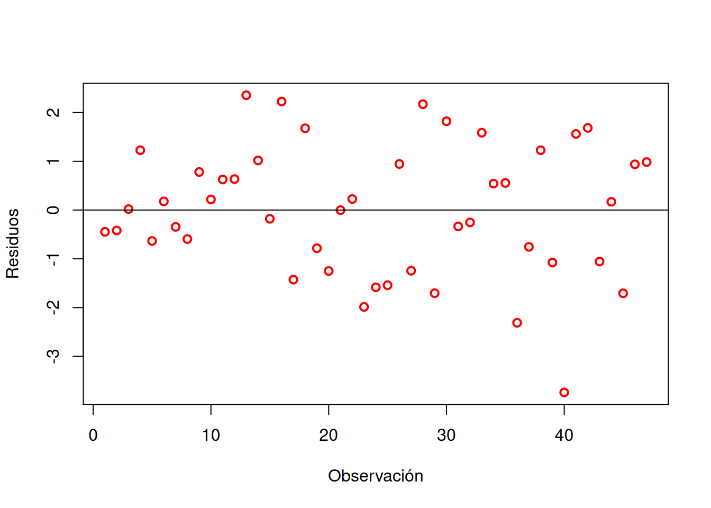
e2 = e^2
plot(e2, ylab="Residuos (al cuadrado)", xlab="Observación", col="red", lwd=2)
abline(h=0, col="black")
plot(datos$NE, e, ylab="Residuos", xlab="Calificación esperada", col="red", lwd=2)
abline(h=0, col="black")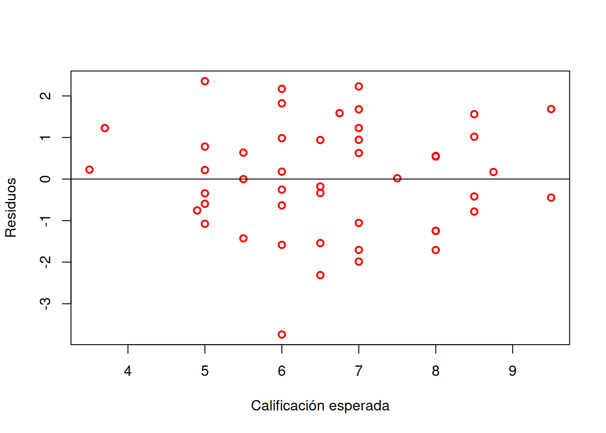
plot(datos$OE, e, ylab="Residuos", xlab="Opción elegida", col="red", lwd=2)
abline(h=0, col="black")
plot(datos$G, e, ylab="Residuos", xlab="Género", col="red", lwd=2)
abline(h=0, col="black")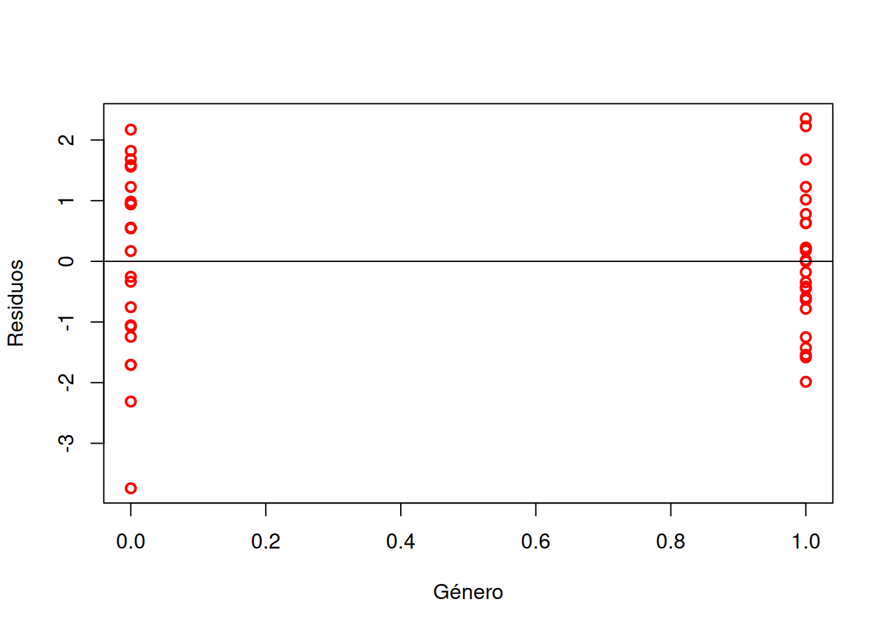
plot(datos$NE, e2, ylab="Residuos (al cuadrado)", xlab="Calificación esperada", col="red", lwd=2)
abline(h=0, col="black")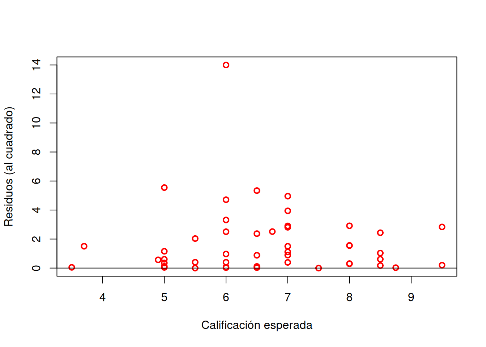
plot(datos$OE, e2, ylab="Residuos (al cuadrado)", xlab="Opción elegida", col="red", lwd=2)
abline(h=0, col="black")
plot(datos$G, e2, ylab="Residuos (al cuadrado)", xlab="Género", col="red", lwd=2)
abline(h=0, col="black")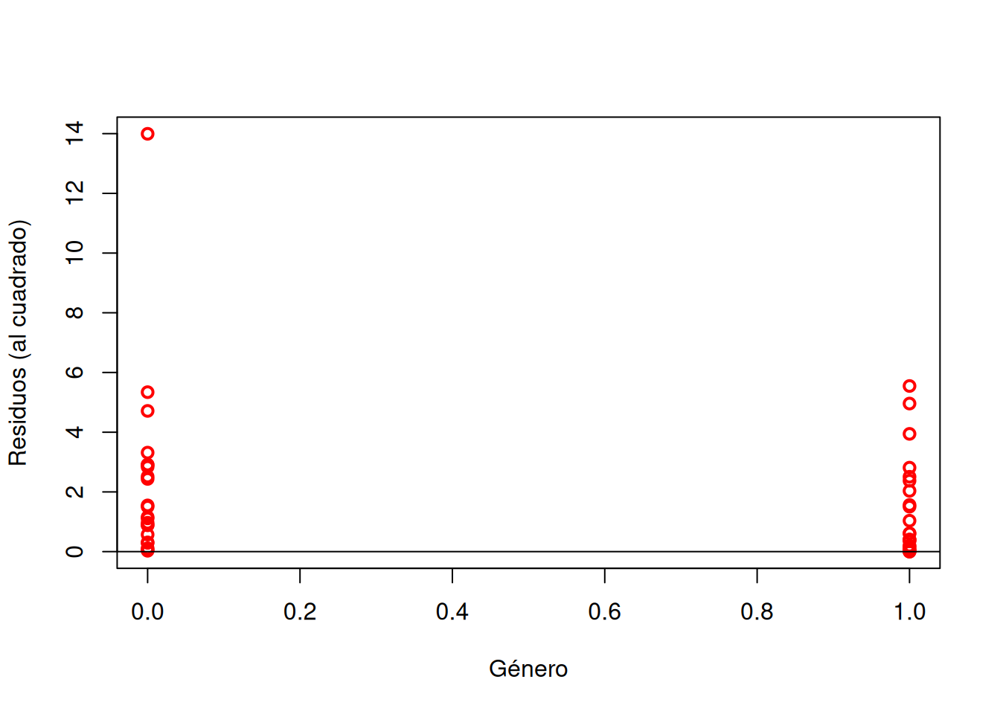
# p-valor contraste de White = 0.653257\(\mathbf{CO}\) es la calificación obtenida en el examen final de la asignatura.
\(\mathbf{EC}\) es la calificación obtenida en el ejercicio realizado en clase.
\(\mathbf{EO}\) es la calificación obtenida en el ejercicio realizado con ordenador.
\(\mathbf{TT}\) es la calificación obtenida en los exámenes tipo test realizados.
Se pide analizar la posible presencia de heterocedasticidad en el modelo \(\mathbf{CO} = \beta_{1} + \beta_{2} \mathbf{EC} + \beta_{3} \mathbf{EO} + \beta_{4} \mathbf{TT} + \mathbf{u}\) a partir de las siguientes representaciones gráficas.
Sabiendo que la regresión auxiliar en la que se tiene como variable dependiente el cuadrado de los residuos del modelo y como independientes todas las variables independientes del modelo original, sus cuadrados y productos cruzados (omitiendo repeticiones) tiene un coeficiente de determianción igual a 0.6372, ¿se confirman las intuiciones obtenidas a través de los medios gráficos?
datos = read.table("data/Ejercicio3 DATOS.csv", header=TRUE, sep=";")
# kable(datos, row.names = TRUE)
reg = lm(datos$CO~datos$EC+datos$EO+datos$TT)
e = reg$residuals
plot(e, ylab="Residuos", xlab="Observación", col="red", lwd=2)
abline(h=0, col="black")
e2 = e^2
plot(e2, ylab="Residuos (al cuadrado)", xlab="Observación", col="red", lwd=2)
abline(h=0, col="black")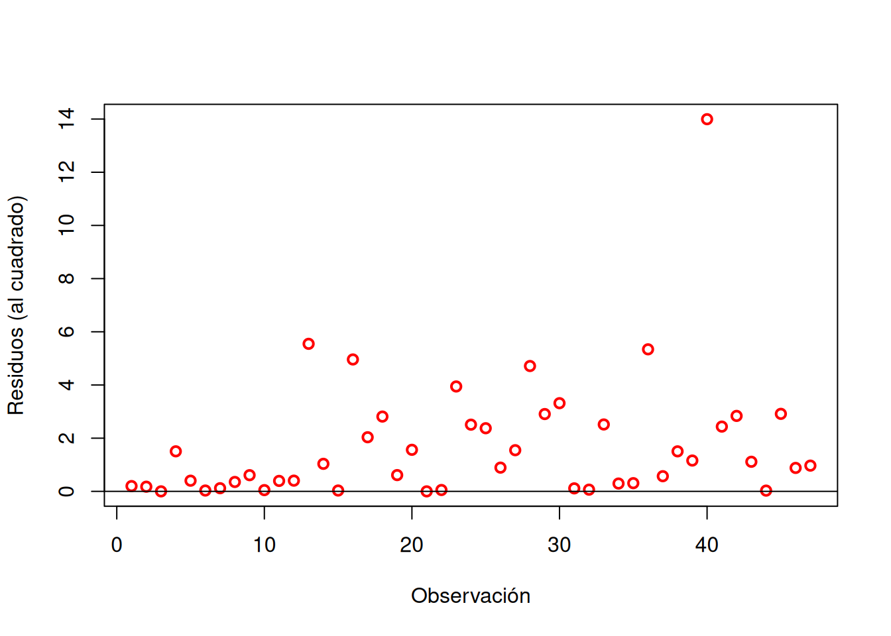
plot(datos$EC, e, ylab="Residuos", xlab="Ejercicio pizarra", col="red", lwd=2)
abline(h=0, col="black")
plot(datos$EO, e, ylab="Residuos", xlab="Ejercicio ordenador", col="red", lwd=2)
abline(h=0, col="black")
plot(datos$TT, e, ylab="Residuos", xlab="Exámen tipo test", col="red", lwd=2)
abline(h=0, col="black")
plot(datos$EC, e2, ylab="Residuos (al cuadrado)", xlab="Ejercicio pizarra", col="red", lwd=2)
abline(h=0, col="black")
plot(datos$EO, e2, ylab="Residuos (al cuadrado)", xlab="Ejercicio ordenador", col="red", lwd=2)
abline(h=0, col="black")
plot(datos$TT, e2, ylab="Residuos (al cuadrado)", xlab="Exámen tipo test", col="red", lwd=2)
abline(h=0, col="black")
# p-valor contraste de White = 0.572439EC2 = datos$EC^2
EO2 = datos$EO^2
TT2 = datos$TT^2
int1 = datos$EC*datos$EO
int2 = datos$EC*datos$TT
int3 = datos$EO*datos$TT
reg_aux = lm(e2~datos$EC+datos$EO+datos$TT+EC2+EO2+TT2+int1+int2+int3) # White
summary(reg_aux) # R2 = 0.6372
47*0.672 > qchisq(0.95, 9) # contradictorio con lo que viene a continuación
bptest(reg, studentize = FALSE)Se pide analizar la posible presencia de heterocedasticidad en el modelo \(\mathbf{C} = \beta_{1} + \beta_{2} \mathbf{I} + \beta_{3} \mathbf{D} + \beta_{4} \mathbf{H} + \mathbf{u}\) a partir de las siguientes representaciones gráficas.
datos = read.table("data/Ejercicio6 DATOS.csv", header=TRUE, sep=";")
# kable(datos, row.names = TRUE)
reg = lm(datos$C~datos$R+datos$C+datos$H)Warning in model.matrix.default(mt, mf, contrasts): the response appeared on
the right-hand side and was droppedWarning in model.matrix.default(mt, mf, contrasts): problem with term 2 in
model.matrix: no columns are assignede = reg$residuals
e2 = e^2
plot(e2, ylab="Residuos (al cuadrado)", xlab="Observación", col="red", lwd=2)
abline(h=0, col="black")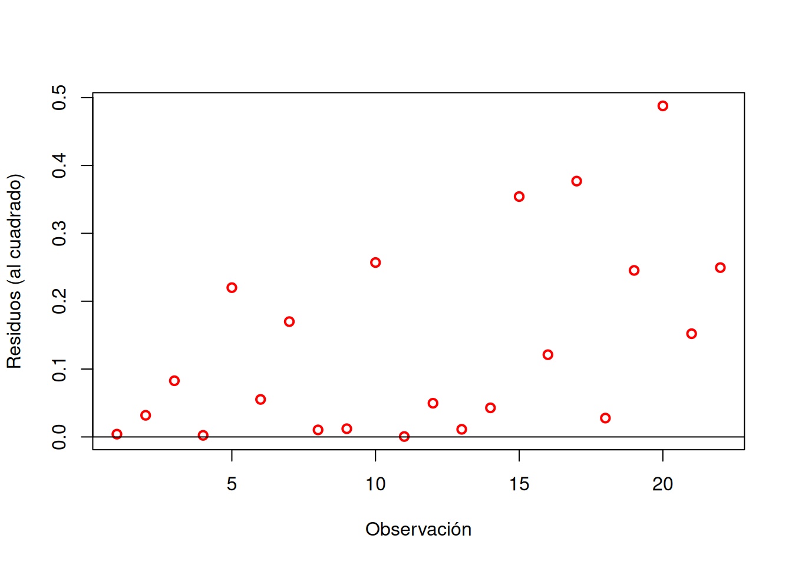
plot(datos$R, e2, ylab="Residuos (al cuadrado)", xlab="Ingresos", col="red", lwd=2)
abline(h=0, col="black")
# p-valor contraste de White = 0.0311235¿Se confirman las intuiciones obtenidas a través de los medios gráficos a partir de la siguiente información? En caso de detectar algún problema, ¿qué información puede aportar sobre el mismo? ¿Qué herramienta ha usado?
\[\widehat{\mathbf{e}}^{2} = 0.057 + 0.005 \cdot \mathbf{I}^{2}, \quad R^{2} = 0.3574, \quad Std(pendiente) = 0.0015,\]
\[\widehat{\mathbf{e}}^{2} = -0.1968 + 0.1832 \cdot \sqrt{\mathbf{I}}, \quad R^{2} = 0.3276, \quad Std(pendiente) = 0.0587,\]
\[\widehat{\mathbf{e}}^{2} = -0.0263 + 0.04651 \cdot \mathbf{I}, \quad R^{2} = 0.3447, \quad t_{exp}(pendiente) = 3.243,\]
\[\widehat{\mathbf{e}}^{2} = 0.3024 - 0.4744 \cdot \frac{1}{\mathbf{I}}, \quad R^{2} = 0.2367, \quad t_{exp}(pendiente) = 2.49,\]
\[\widehat{\mathbf{e}}^{2} = 0.475 - 0.586 \cdot \frac{1}{\sqrt{\mathbf{I}}}, \quad R^{2} = 0.2714, \quad p-valor(pendiente) = 0.0129,\]
\[\widehat{\mathbf{e}}^{2} = 0.2111 - 0.5257 \cdot \frac{1}{\mathbf{I}^{2}}, \quad R^{2} = 0.1703, \quad p-valor(pendiente) = 0.056.\]
R1 = datos$R^2 # h=2
reg_aux = lm(e2~R1)
summary(reg_aux)
R2 = sqrt(datos$R) # h=1/2
reg_aux = lm(e2~R2)
summary(reg_aux)
R3 = datos$R # h=1
reg_aux = lm(e2~R3)
summary(reg_aux)
R4 = 1/R3 # h=-1
reg_aux = lm(e2~R4)
summary(reg_aux)
R5 = 1/R2 # h=-1/2
reg_aux = lm(e2~R5)
summary(reg_aux)
R6 = 1/R1 # h=-2
reg_aux = lm(e2~R6)
summary(reg_aux)\[\mathbf{e}^{2} = \alpha_{1} + \alpha_{2} \mathbf{V} + \alpha_{3} \mathbf{B} + \alpha_{4} \mathbf{A} + \mathbf{w}_{t}, \quad R^{2} = 0.008122.\] ¿Qué herramienta ha usado?
datos = read.table("data/Ejercicio7 DATOS.csv", header=TRUE, sep=";")
# kable(datos, row.names = TRUE)
reg = lm(datos$Salario~datos$Ventas+datos$Beneficios+datos$Anos)
e = reg$residuals
e2 = e^2
reg_aux = lm(e2~datos$Ventas+datos$Beneficios+datos$Anos) # Breusch-Pagan
summary(reg_aux) # R2 = 0.008122
177*0.008122 > qchisq(0.95, 3)
# p-valor contraste de White = 0.91432\[\mathbf{e}^{2} = \alpha_{1} + \alpha_{2} \mathbf{EC} + \alpha_{3} \mathbf{EL} + \alpha_{4} \mathbf{V} + \mathbf{w}_{t}, \quad R^{2} = 0.04149,\] \[\begin{eqnarray*} \mathbf{e}^{2} &=& \alpha_{1} + \alpha_{2} \mathbf{EC} + \alpha_{3} \mathbf{EL} + \alpha_{4} \mathbf{V} \\ & & + \alpha_{5} \mathbf{EC}^{2} + \alpha_{6} \mathbf{EL}^{2} + \alpha_{7} \mathbf{V}^{2} \\ & & + \alpha_{8} \mathbf{EC} \cdot \mathbf{EC} + \alpha_{9} \mathbf{EC} \cdot \mathbf{V} + \alpha_{10} \mathbf{EL} \cdot \mathbf{V} + \mathbf{w}_{t}, \quad R^{2} = 0.1313. \end{eqnarray*}\]
¿Qué herramientas ha usado? ¿Por qué?
datos = read.table("data/Ejercicio10 DATOS.csv", header=TRUE, sep=";")
# kable(datos, row.names = TRUE)
reg = lm(datos$D~datos$EC+datos$EL+datos$V)
e = reg$residuals
e2 = e^2
reg_aux = lm(e2~datos$EC+datos$EL+datos$V) # Breusch-Pagan
summary(reg_aux) # R2 = 0.04149
100*0.04149 > qchisq(0.95, 3)
EC2 = datos$EC^2
EL2 = datos$EL^2
V2 = datos$V^2
int1 = datos$EC*datos$EL
int2 = datos$EC*datos$V
int3 = datos$EL*datos$V
reg_aux = lm(e2~datos$EC+datos$EL+datos$V+EC2+EL2+V2+int1+int2+int3) # White
summary(reg_aux) # R2 = 0.1313
100*0.1313 > qchisq(0.95, 9)
# p-valor contraste de White = 0.156747Se pide analizar la presencia de heterocedasticidad en el modelo \(\mathbf{S} = \beta_{1} + \beta_{2} \mathbf{E} + \beta_{3} \mathbf{R} + \beta_{4} \mathbf{H} + \beta_{5} \mathbf{C} + \mathbf{u}\) a partir de las siguientes representaciones gráficas.
Tras ordenar (de forma creciente) las observaciones a partir de la variable de horas de trabajo semanales, se contrasta la hipótesis nula de homocedasticidad obteniéndose un valor experimental igual a 1.428 con 463 y 462 grados de libertad. ¿Qué conclusiones obtiene? ¿Por qué se ordenan las observaciones de forma creciente (y no decreciente) según la variable de horas de trabajo semanales?
datos = read.table("data/Ejercicio11 DATOS.csv", header=TRUE, sep=";")
# kable(datos, row.names = TRUE)
reg = lm(datos$S~datos$E+datos$R+datos$H+datos$C) # p-valor contraste de White = 0.00120146
e = reg$residuals
e2 = e^2
plot(datos$E, e2, ylab="Residuos (al cuadrado)", xlab="Edad", col="red", lwd=2)
abline(h=0, col="black")
plot(datos$R, e2, ylab="Residuos (al cuadrado)", xlab="Raza", col="red", lwd=2)
abline(h=0, col="black")
plot(datos$H, e2, ylab="Residuos (al cuadrado)", xlab="Horas de trabajo", col="red", lwd=2)
abline(h=0, col="black")
plot(datos$C, e2, ylab="Residuos (al cuadrado)", xlab="Estado civil", col="red", lwd=2)
abline(h=0, col="black")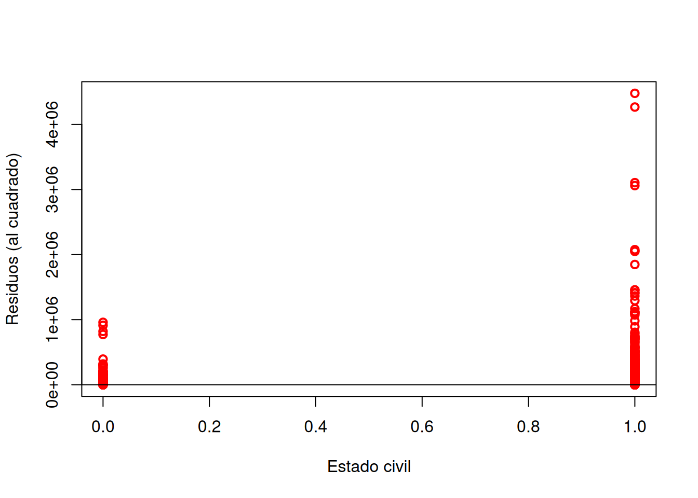
gqtest(reg, order.by = ~ datos$E)
gqtest(reg, order.by = ~ datos$R)
gqtest(reg, order.by = ~ datos$H)
qf(0.95, 463, 462)
gqtest(reg, order.by = ~ datos$C)\[\widehat{\mathbf{e}}^{2} = 2.155 - 8633.51 \cdot \mathbf{B}^{-2}, \quad R^{2} = 3617, \quad Std(pendiente) = 2703.4,\] \[\widehat{\mathbf{e}}^{2} = 3.1728 - 197.75 \cdot \mathbf{B}^{-1}, \quad R^{2} = 4163, \quad Std(pendiente) = 55.18,\]
\[\widehat{\mathbf{e}}^{2} = 5.212 - 40.6989 \cdot \mathbf{B}^{-1/2}, \quad R^{2} = 0.4374, \quad Std(pendiente) = 10.8788,\]
\[\widehat{\mathbf{e}}^{2} = -2.9345 + 0.3974 \cdot \mathbf{B}^{1/2}, \quad R^{2} = 4619, \quad Std(pendiente) = 0.1011,\]
\[\widehat{\mathbf{e}}^{2} = -0.8918 + 0.01888 \cdot \mathbf{B}, \quad R^{2} = 0.4646, \quad Std(pendiente) = 0.0047,\] \[\widehat{\mathbf{e}}^{2} = 0.1387 + 0.000079 \cdot \mathbf{B}^{2}, \quad R^{2} = 0.4536, \quad Std(pendiente) = 0.0000205.\] Tras reordenadar de forma creciente los datos con respecto a la variable de los beneficios, se ajusta por Mínimos Cuadrados Ordinarios las regresiones formadas por las 7 primeras y últimas observaciones obteniéndose que sus correspondientes suma de cuadrados de los residuos son 1.1341 y 32.93. ¿Se verifica la hipótesis de homocedasticidad supuesta en el modelo de interés inicial? ¿Qué herramienta ha usado?
A partir de una muestra con 80 observaciones se estima un modelo de regresión lineal con 3 variables explicativas, se obtienen los residuos de dicho modelo, y con éstos se estima por Mínimos Cuadrados Ordinarios la siguiente regresión auxiliar: \[\mathbf{e}^{2} = \alpha_{1} + \alpha_{2} \mathbf{X}_{3}^{h} + \mathbf{v},\] de forma que para \(h=1\) se obtiene un coeficiente de determinación igual a 0.61 y un valor experimental para el contraste de significación individual de la pendiente igual a 3.25. ¿Se incumple alguna de las hipótesis básicas del modelo? ¿Qué herramienta ha usado? ¿Qué tendría que hacer para estimar de forma eficiente los estimadores? Compruebe que con su propuesta queda solucionado el problema.
Utilizando una muestra de 25 empresas se ha estimado el modelo que explica el beneficio de la empresa, \(\mathbf{B}\), en función del número de empleados, \(\mathbf{E}\), y el gasto en publicidad, \(\mathbf{G}\). Tras ordenar la muestra en orden creciente según el número de empleados, se obtiene la siguiente estimación para las diez primeras y últimas empresas, respectivamente: \[\widehat{\mathbf{B}}_{i} = 80.5 + 0.93 \cdot \mathbf{E}_{i} - 0.87 \cdot \mathbf{G}_{i}, \ SCR = 125.7,\] \[\widehat{\mathbf{B}}_{i} = 20.61 + 0.53 \cdot \mathbf{E}_{i} - 0.105 \cdot \mathbf{G}_{i}, \ \sigma^2 = 71.27.\] Además, a partir de los residuos del modelo inicial, se dispone de la siguiente información donde se tiene que todos los coeficientes son significativamente distintos de cero: \[e_{i}^{2} = 6.81 - 625.17 \cdot \frac{1}{\mathbf{E}_{i}}, \quad R^{2} = 0.43,\] \[e_{i}^{2} = 10.23 - 89.54 \cdot \frac{1}{\sqrt{\mathbf{E}_{i}}}, \quad R^{2} = 0.33.\] Se pide detectar si hay presencia de heteroscedasticidad en el modelo indicando las herramientas que ha usado. En caso de que la hubiera, especificar cuál sería la matriz de transformación más adecuada para solucionarla.
Suponiendo que existe heteroscedasticidad en un modelo lineal, \(\mathbf{V} = \beta_{1} + \beta_{2} \cdot \mathbf{P} + \mathbf{u}\), que estudia las ventas en función del precio y que \(var(\mathbf{u}) = \sigma^{2} \cdot \mathbf{P}^{4}\), indique como transformar el modelo para que sea homocedástico y comprobar que el problema ha sido resuelto.
En el modelo lineal que analiza el gasto público en servicios sociales, \(\mathbf{G}\), en función del producto interior bruto, \(\mathbf{PIB}\), se verifica que \(var (\mathbf{u}) = \frac{\sigma^{2}}{\sqrt{\mathbf{PIB}}}\). ¿Qué problema presentan las estimaciones por Mínimos Cuadrados Ordinarios de los coeficientes de las variables del modelo? Se pide especificar la matriz de transformación que corrija dicho problema y comprobar que se ha solucionado.
Supongamos que en el modelo \(\mathbf{precio} = \beta_{1} + \beta_{2} log(\mathbf{superficie}) + \beta_{3} \mathbf{habitaciones} + \mathbf{u}\) se verifica que \(var (\mathbf{u}) = \sigma^{2} log(\mathbf{superficie})\). Indique qué problema tiene el modelo, cómo lo resolvería y compruebe que efectivamente queda resuelto.